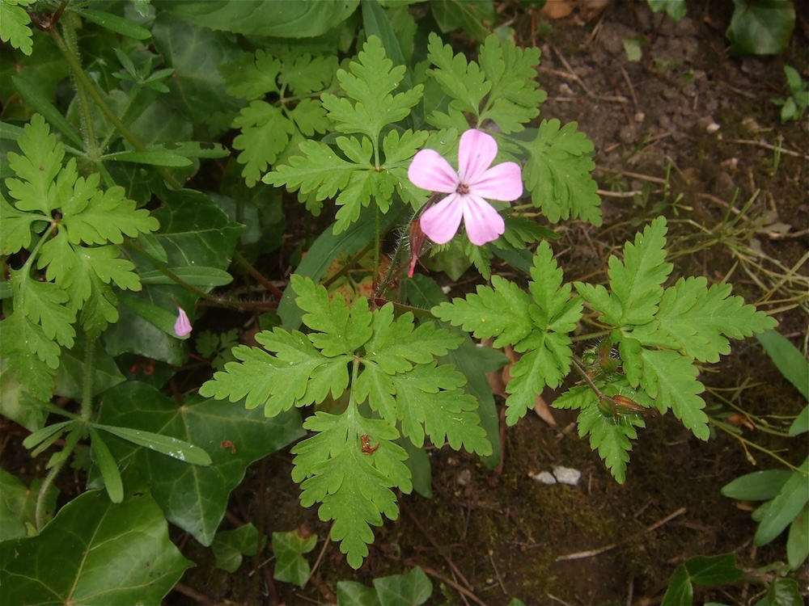
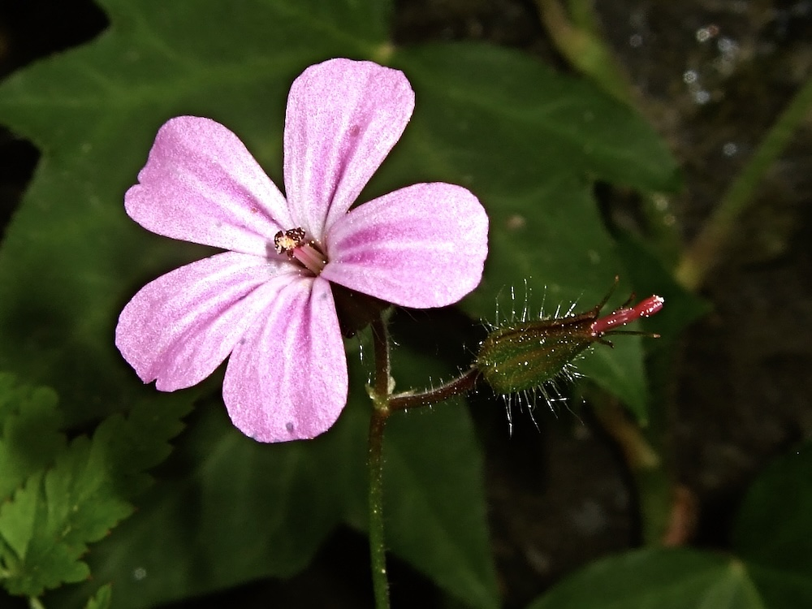

Stinkender Storchschnabel — zart blühend, würzig duftend.



Der Geruch macht den Namen
Wer ein Blatt des Ruprechtskrauts zwischen den Fingern reibt, bekommt einen sehr eigenen Geruch in die Nase: leicht harzig, vage „tierisch", von vielen als unangenehm empfunden. Der Geruch wirkt aber abschreckend auf Schnecken, Pilze und manche Insekten. Eine clevere chemische Verteidigung — und der Grund für den Namen „Stinkstorchschnabel".
Schattenspezialist mit Frühstart
Anders als die meisten Storchschnäbel liebt das Ruprechtskraut Halbschatten und Schatten. Wo andere Geranium-Arten in der Sonne stehen müssen, gedeiht es an Mauern, in lichten Wäldern und sogar in Felsritzen. Es blüht ungewöhnlich lange — von Mai bis weit in den Oktober — und kann mehrere Generationen pro Jahr ausbilden.
Wissenswertes & Merksätze
Erkennungszeichen
Stängel und Blätter oft rötlich überlaufen, drüsig behaart. Blätter handförmig in 3–5 fein zerschlitzte Abschnitte geteilt. Blüten klein (1–1,5 cm), rosa, fünfteilig, mit dünnen weißen Streifen.
Schleudermechanismus
Wie alle Storchschnäbel hat auch G. robertianum den klassischen Samen-Katapultmechanismus. Bei der Reife der Frucht spaltet sich die Wand auf und schleudert die Samen oft mehrere Meter weit.